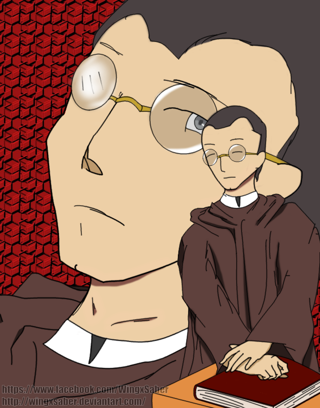

| CHARACTERS IN NOLI ME TANGERE |
 |
Sisa |
- The mother of Crispín and Basilio
- Impoverished and married to a violent drunkard
|
 |
Crispín |
- A young boy studying to be a church caretaker. Crispín and his brother Basilio work hard to support to their momther, Sisa
- Crispín was blamed for stealing money from the church coffers by the head sexton and was kept a virtual prisoner until the debt was paid
|
 |
Basilio |
- Basilio is Crispín's older brother
- Like his younger brother, he works as a sexton and is a church caretaker
|
|  |
Padre Sibyla |
- A priest serving in the Binondo district in the city of Manila
- Father Sibyla serves as a foil to the corrupt Padre Dámaso and the perverse Padre Salví
|
 |
Pilosopo Tasio |
- An old man who previously studied philosophy
- Believed to be crazy by most of the community
- Respected Ibarra and gave him valuable advice and helped Ibarra's father before him.
|